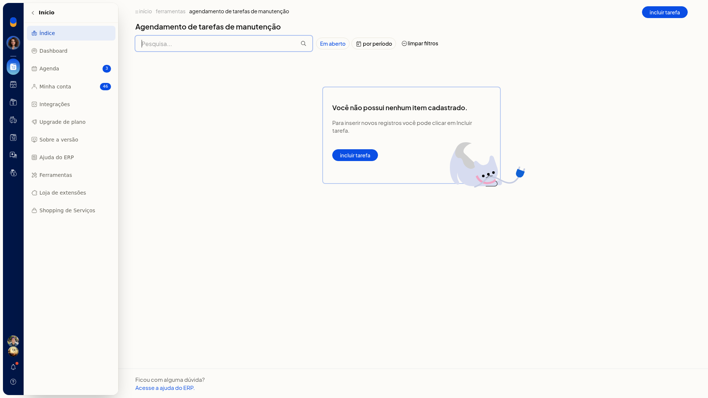

Agendamento de tarefas de manutenção
Importante
- Ao informar Quando, a tela exibe um aviso de execução noturna.
Instruções
-
Acesse Início > Ferramentas > Agendamento de tarefas de manutenção.
-
Clique em Incluir tarefa.
-
Em Tipo, escolha a tarefa, como Importação de estoque do correios LOG+. O campo não é obrigatório.

-
Informe Quando. O campo não é obrigatório.
-
Clique em Salvar para agendar a tarefa. Para descartar, clique em Cancelar. Para retornar à lista, clique em Voltar.